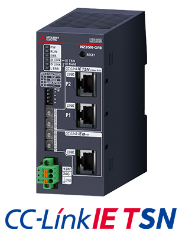
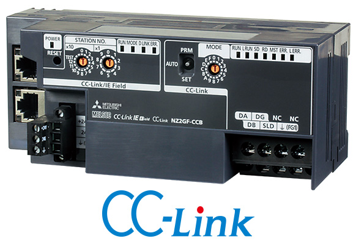
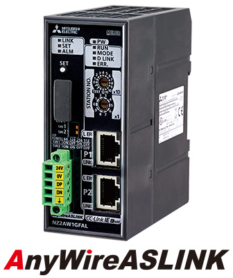

Network-related products |
Programmable Controllers MELSEC
CC-Link IE Line Up


Bridge Modules
CC-Link IE TSN - CC-Link IE Field Network bridge module
- NZ2GN-GFBNEW
- Enables access from the CC-Link IE Field Network to each station and device on CC-Link IE TSN
- Can be used as a master or local station on the CC-Link IE Field Network and as a remote station on CC-Link IE TSN
- Enables CC-Link IE TSN devices to be added to the existing equipment on the CC-Link IE Field Network *1
- *1.Since NZ2GN-GFB does not function as a CC-Link IE TSN master station, a separate master station is required on the CC-Link IE TSN network.

CC-Link IE Field Network CC-Link bridge module
- Connects CC-Link Version 1 Remote I/O stations and Remote device stations to CC-Link IE Field Network
- Enables CC-Link parameters to be set with simple switch operations
- Link devices assigned to this bridge module are assigned as the CC-Link remote station's link devices in the same station order

CC-Link IE Field Network - AnyWireASLINK bridge module
- Seamlessly connects AnyWireASLINK products to CC-Link IE Field Network
- Supports max. wiring distance of 200 m with AnyWireASLINK, realizing flexible wiring topology
- Supports iQSS (iQ Sensor Solution), which enables parameter setup and monitoring of remote units connected to AnyWireASLINK
